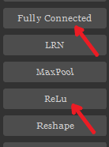
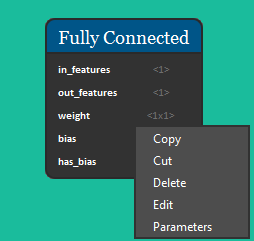
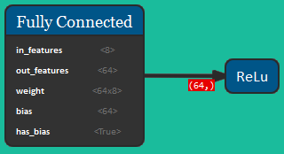
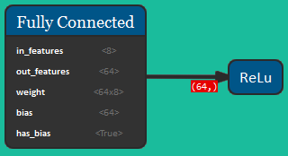
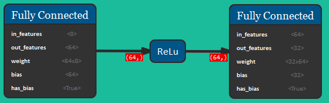
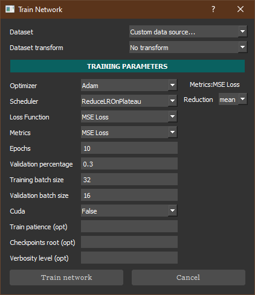
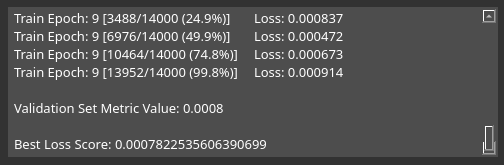
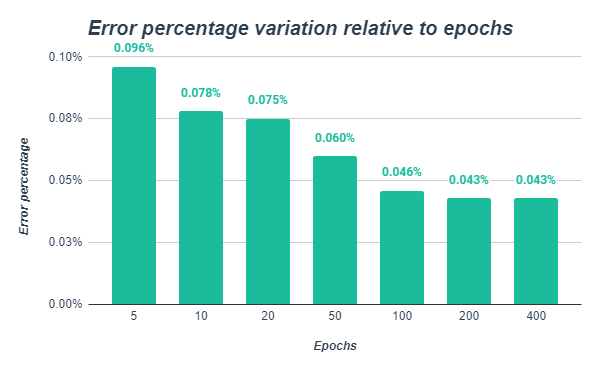

Tutorial
Building the network
Once NeVer2 is open, select the required blocks in the toolbar on the left. In this case we're going to use only Fully Connected and ReLU blocks.
When clicked, the desired nodes will appear on the canvas with default parameters. Drag and drop them any position you like on the canvas. To edit their parameters double-click or right-click and click "edit". To delete them right-click and click "delete" or press the DEL key.
To begin, we're going to select a Fully Connected block and set the "in_features" and "out_features" parameters to values 8 and 64 respectively.
After selecting a ReLU node, we can connect them activating the drawing mode with the "Draw Line" button (in the top-left corner) or by pressing the CTRL+D shortcut and clicking on them (first click on Fully Connected block and then on the ReLU node).
 

We're now going to add a new Fully Connected block and set its "out_features" parameter to 32, then link the previous ReLU node to it. By connecting the ReLU node the new Fully Connected block "in_features" parameter is automatically set to the ReLU output value (64). Next, we're adding another ReLU node and we're connecting the previous Fully Connected node to it.
We're now going to repeat the last two steps one more time, creating a Fully Connected node with "out_features" set to 16, and adding a subsequent ReLU block.
Lastly we're going to add a final Fully Connected block and set its "out_features" parameter to 6.
Training the network
Now that we have successfully built the network, we need to train it. We're going to click on the "learn" button in the menu bar, then click on the "train" button and select the James custom dataset (TXT or CSV format). The target index field contains the input size.

Then, we're going to set the training parameters according to the following image.
The Dataset transform is not required for datasets not related to MNIST.
Concerning the optimizer, the only one available at the moment is "Adam" ("adaptive moment estimation"),
the most popular and effective gradient based optimization algorithm, so that's what we're using.
You may also change Adam's default parameters, if you wish.
The learning rate scheduler available is "ReduceLROnPlateau", which will adjust the learning rate when a plateau
in model performance is detected, e.g. no change for a given number of training epochs.
As Loss Function you can choose between "Cross Entropy" and "MSE Loss"; the choice depends on the neural network structure.
In our case we are going to use the second one.
As metric function there are two options "inaccuracy", that ..., and "MSE loss", of which you can change the reduction type.
Then, we have the epochs number, that defines the number times that the learning algorithm will work through the entire training dataset.
The next parameter validation percentage (a number between 0 and 1) refers to the percentage of the dataset to use as the validation set.
To split your dataset computation you can set the next two constants, training batch size and validation batch size, that is recommended
with large datasets. We're going to set 32 and 16 respectively.
Finally, if you want to use a Nvidia GPU during the training you can set cuda to True.
The last three parameters are optional and correspond to:
-Train patience: The number of epochs in which the loss may not decrease before the training procedure is interrupted with early stopping.
-Checkpoints root: where to store the checkpoints of the training strategy.
-Verbosity level: After how many batch the strategy prints information about how the training is going.
Finally we're going to click on the "Train Network" button and wait for the results.
 The Best Loss Score label indicates the network's error percentage. In this case, with a 10 epoch long training we got 0.00048, corresponding to
a 0.048% error rate!
As shown in the graph below, if you train the network for more epochs you will notice an improvement in the error percentage.
